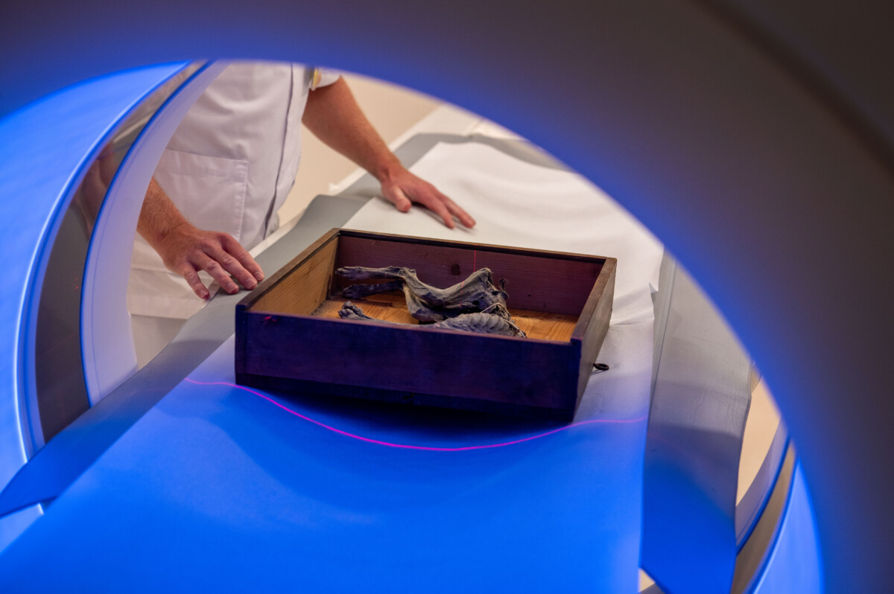

العمر والهوية
التأريخ والفحص يدعمان بقوة كونها الحيوان المكتشف سنة 1906 ومن زمن بناء ذلك الجزء من الكنيسة.
تحقيق مادي وزمني في القطة التي اكتُشفت سنة 1906 بين جدارين في برج بالجانب الشمالي من الكنيسة الكبرى في بريدا، مع فصل نتائج CT والكربون المشع عن تفسير «قربان البناء».

1440–1460 · الفترة التي ترجع إليها القطة والجزء المعماري الذي وجدت فيه بحسب البحث الذي نشرته الكنيسة.
1906 · اكتشاف القطة أثناء أعمال الترميم بين جدارين في برج شمالي؛ صورة سالبة زجاجية توثق الثقب في الجزء السفلي من الجناح الشمالي.
1916 · ظهرت كقطعة فضولية في معرض للقطط في لاهاي.
2020 · عادت إلى الكنيسة بعد العثور عليها في Huys te Warmond.
2024 · مقارنة بالصور القديمة، CT وتأريخ كربوني؛ الكنيسة تعلن ثقة تتجاوز 95% بأنها القطة الأصلية وبأن عمرها يقارب 600 سنة.
18 يونيو 2025 · عرضها مجددًا وتسميتها «بولِكه» بعد مسابقة مدرسية.
التأريخ والفحص يدعمان بقوة كونها الحيوان المكتشف سنة 1906 ومن زمن بناء ذلك الجزء من الكنيسة.
الكنيسة تعرض تفسير قربان البناء باعتباره الاحتمال الأرجح. لكنه تفسير ثقافي للسياق، وليس شيئًا يقيسه الكربون المشع مباشرة.